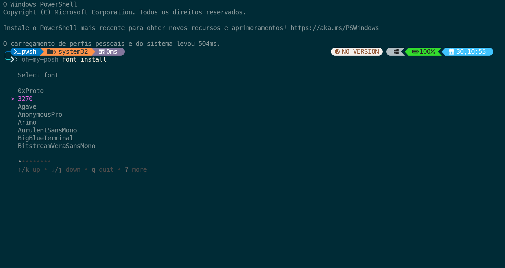
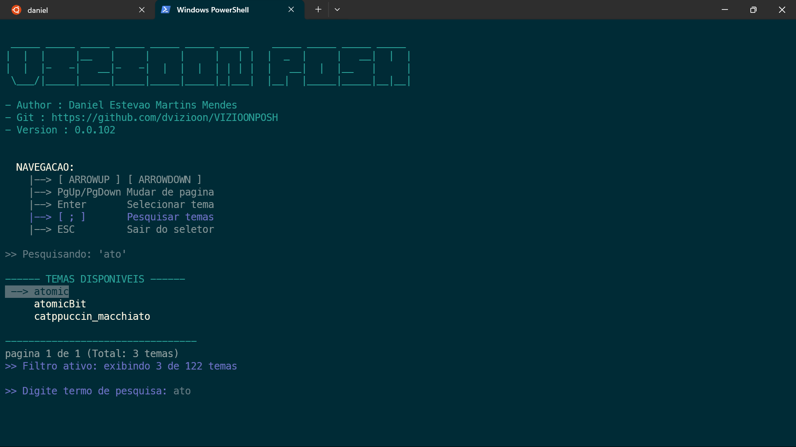
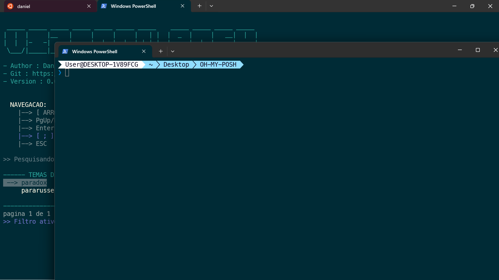

Interface do Linux (Dialog)

Menu Principal do Dialog
Interface inicial do seletor de temas no Linux, usando Dialog para uma navegação intuitiva.

Seleção de Tema com Dialog
Lista paginada de temas disponíveis para fácil navegação e seleção.

Fonts Recomendadas
Configuração de fontes recomendadas para melhor experiência visual (3270 e Meslo).
Interface do Windows (PowerShell)

Versão Windows
Interface nativa do PowerShell para navegação e seleção de temas no Windows.
Exemplos de Temas Aplicados

Tema Atomic
Tema com destaque para informações do sistema e status do Git.

Tema Atomic (Exemplo 2)
Outro exemplo do tema Atomic, mostrando diferentes contextos.

Tema Paradox
Tema com estilo minimalista e informações essenciais do sistema.

Tema Paradox (Exemplo 2)
Outra visualização do tema Paradox em diferentes condições.

Demonstração Completa
Animação mostrando o fluxo completo de uso da ferramenta VIZIOONPOSH.